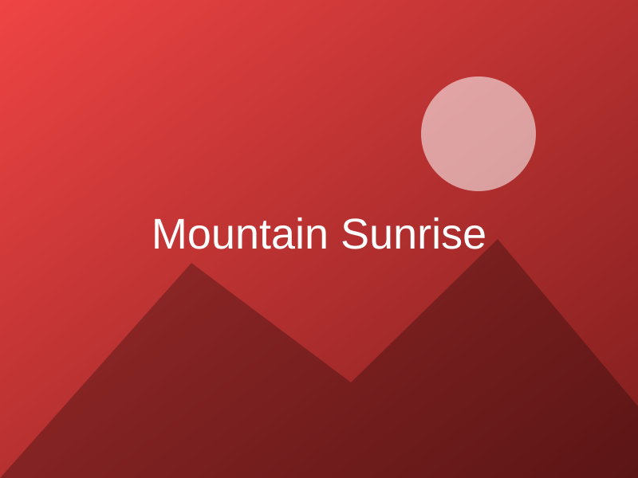
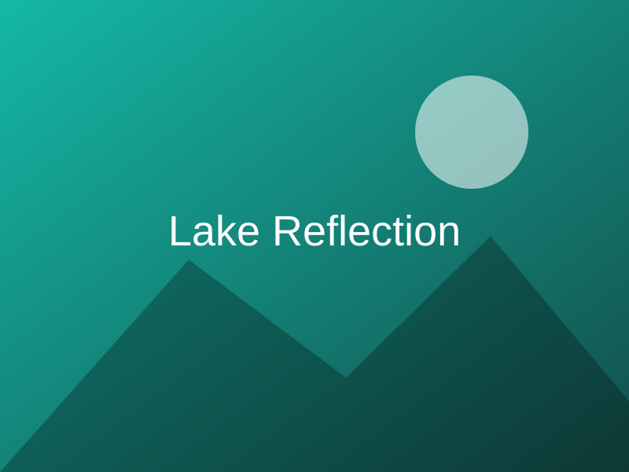

Image Filter Gallery
Hover over an image to remove its filter.

blur: Mountain Sunrise
grayscale: Ocean Breeze
sepia: Forest Trail
brightness: Twilight Sky
contrast: Desert Dunes

hue-rotate: Lake Reflection